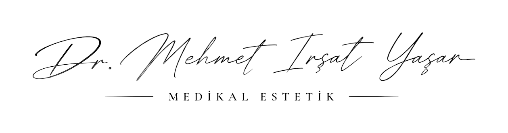

İrşat Yaşar, önce dinleyen hekim.
Güzellik Bir Algıdır, Estetik Bir Sorumluluktur.
Güzellik, tarih boyunca değişen, toplumların kültürel değerleriyle şekillenen ve bireysel algılarla yeniden tanımlanan dinamik bir kavramdır. Her dönemin, her toplumun ve her bireyin güzelliğe bakışı farklıdır. Bu nedenle güzelliği değişmez kalıplar üzerinden değerlendirmek yerine, kişisel özellikleri ve doğal farklılıklarıyla ele almak gerekir.
Bu noktada bilimsel yaklaşım, doğru hekimlik ve etik sorumluluk büyük önem taşır. Çünkü iyi bir estetik uygulamanın amacı, geçici güzellik trendlerini takip etmek veya herkesi aynı estetik kalıba yaklaştırmak değil; kişinin doğal özelliklerini koruyarak dengeli, uyumlu ve kendisiyle bütünleşen sonuçlara ulaşmaktır.
Bizce estetik, değişen güzellik algısının peşinden gitmek değil; bilimin rehberliğinde, kişiye özel, bilinçli ve doğal kararlar verebilmektir.
Hekim
Dr. Mehmet İrşat Yaşar, 1982 Samsun doğumlu. İlkokul, ortaokul ve lise eğitimini Samsun'da tamamladı; Ankara Üniversitesi Tıp Fakültesi'ne dereceyle girdi ve eğitimini başarıyla bitirdi.
Pratisyen hekim · Medikal estetik
Meslek hayatına Şanlıurfa'da mecburi hizmetle başladı; bu dönemde sağlık ocağında yönetici hekim olarak görev yaptı. Ardından Ankara'da çeşitli özel hastanelerde hekim olarak çalıştı ve mesleki deneyimini farklı sağlık kuruluşlarında geliştirdi.
2019'da gittiği Amerika Birleşik Devletleri'nde 2023'e kadar doktor asistanı olarak çalıştı. Sağlık alanındaki deneyimini uluslararası bir ortamda sürdürürken medikal estetik alanındaki bilgi ve birikimini derinleştirdi; bu dönem İngilizcesini de ileri düzeye taşıdı.
Bugün YDA Center'daki muayenehanesinde hasta kabul ediyor. Yaklaşımı kısa: önce dinlemek, yüzün oranlarına saygı duymak, gerekmeyen bir uygulamayı önermemek.
Uygulamalar
Hangisinin size uygun olduğu, ya da hiçbirinin gerekmediği, muayeneden sonra konuşulur.
Her cerrahi veya girişimsel işlemde sonuçlar kişiden kişiye değişiklik gösterebilir. İşlem öncesinde hekiminizden detaylı görüş almanız önerilir.
Botulinum toksin+Mimik çizgilerinde denge · alın, kaş arası, göz çevresi
Mimik kaslarının neden olduğu çizgilerde, kasın aşırı çalışmasını dengelemeye yönelik bir uygulama. Amaç ifadeyi silmek değil, yüzü daha dinlenmiş göstermek.
Hyaluronik asit dolgu+Hacim ve hatlarda ölçülü destek · dudak, elmacık, çene hattı
Hacim kaybı ya da belirginleşmiş hatlarda, cildin kendi yapısında bulunan bir molekülle yapılan destek.
Cilt bakımı uygulamaları+Doku ve ton, cilt tipine göre
Cildin esnekliği ve tonu için, cilt tipine göre planlanan bakım uygulamaları.
Kişiye özel plan+Tek uygulama yerine yüzün bütününü düşünen yol haritası
Tek bir uygulama yerine, yüzün bütününü düşünen ve zamana yayılan bir yol haritası. Önce eskiz, sonra çizgi.
Mezoterapi+İhtiyaca göre seçilen içerik, küçük dozlarla
Cildin orta katmanına vitamin, mineral ve hyaluronik asit gibi, ihtiyaca göre seçilen içeriklerin küçük dozlarla uygulanması.
PRP+Kişinin kendi kanından elde edilen plazma
Kişinin kendi kanından elde edilen trombositten zengin plazmanın cilde ya da saç derisine uygulandığı yöntem.
Saç tedavileri+Saç dökülmesi ve saç derisi, muayene sonrası plan
Saç dökülmesi ve saç derisi sorunlarında, muayene sonrası kişiye göre planlanan uygulamalar.
Lazer uygulamaları+Leke ve istenmeyen tüyler, cilt tipine göre
Cilt lekeleri ve istenmeyen tüyler için, cilt tipine ve bölgeye göre planlanan lazer uygulamaları.
Dolgu
Hyaluronik asit, hacim kaybı olan bölgeye ölçülü destek verir. Bölgenin üzerine gelin, nasıl çalıştığını izleyin.
Genel+Jel kırışığın altını doldurur, deri düzleşir
Hyaluronik asit, cildin kendi yapısında bulunan bir molekül. Jel, kırışığın altındaki boşluğu doldurur; üstteki deri düzleşir ve zamanla vücut tarafından emilir.
Dudak+Doğal hacim ve belirgin kontur
Dudak dokusunun içine konan az miktarda jel, doğal bir hacim ve daha belirgin bir kontur verir. Amaç dudağı büyütmek değil, oranı korumak.
Burun+Ameliyatsız, küçük profil düzeltmeleri
Burun sırtındaki küçük girinti ve çıkıntılar jelle dengelenir; profil daha düz görünür. Burnun yapısını değiştirmez, ameliyatın yerini tutmaz.
Çene+Yan profilde denge
Çene kemiğinin ucuna yapılan destek, geride kalmış bir çeneyi öne alır ve yan profili dengeler.
Orta yüz+Elmacık kemiğine destek, orta yüzde toparlanma
Elmacık kemiğinin üzerine yapılan destek, yaşla birlikte inen orta yüzü toparlar ve yüze dinlenmiş bir görünüm verir.
Göz altı+Işık dolgusu: göz altındaki çukur ve gölge azalır
Göz altı ile yanak arasındaki çukur doldurulunca bu bölgeye düşen gölge azalır; yüz daha dinlenmiş görünür. Göz altı dokusu ince olduğu için uygunluk muayenede değerlendirilir.
Nazolabial+Burun kenarından ağız köşesine inen çizgi yumuşar
Burun kanadından ağız köşesine uzanan çizginin altına konan jel, bu kıvrımın derinliğini azaltır ve yüzün alt bölümünü yumuşatır.
Şakak+Göz kenarındaki çöküntüyü doldurur
Şakaktaki çöküntü doldurulunca yüzün üst bölümü yumuşar; göz çevresi daha az çökük görünür.
Çene hattı+Alt çene boyunca belirgin hat
Alt çene kemiği boyunca yapılan destek, çene hattını belirginleştirir ve yüz ile boyun arasındaki sınırı netleştirir.
Görseller yapay zekâ ile üretilmiş temsilî animasyonlardır; hasta görüntüsü değildir.
Dinle, ölç, planla.
Dinlemek
İlk görüşmeBeklentiniz, yaşam tarzınız, sağlık geçmişiniz ve varsa önceki uygulamalar konuşulur.
Ölçmek
MuayeneYüz incelenir; uygun seçenekler ve her birinin sınırları açıkça anlatılır.
Planlamak
Uygulama ve kontrolUygulama uygun koşullarda yapılır; belirlenen sürede kontrol görüşmesiyle birlikte değerlendirilir.